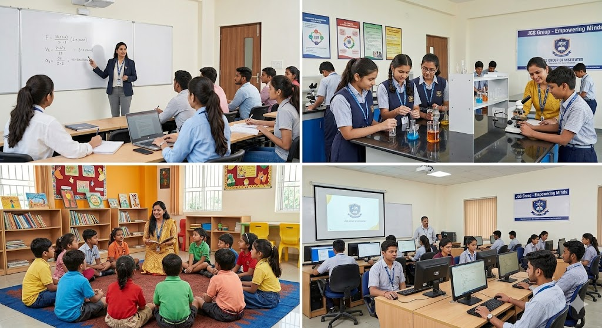
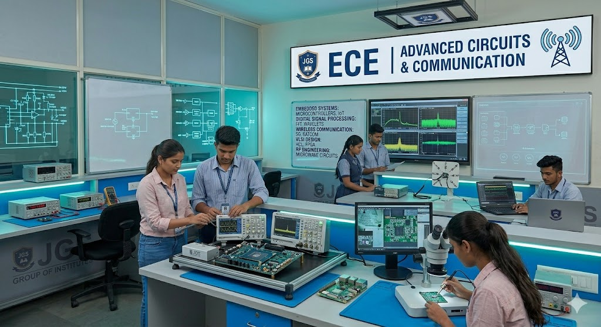
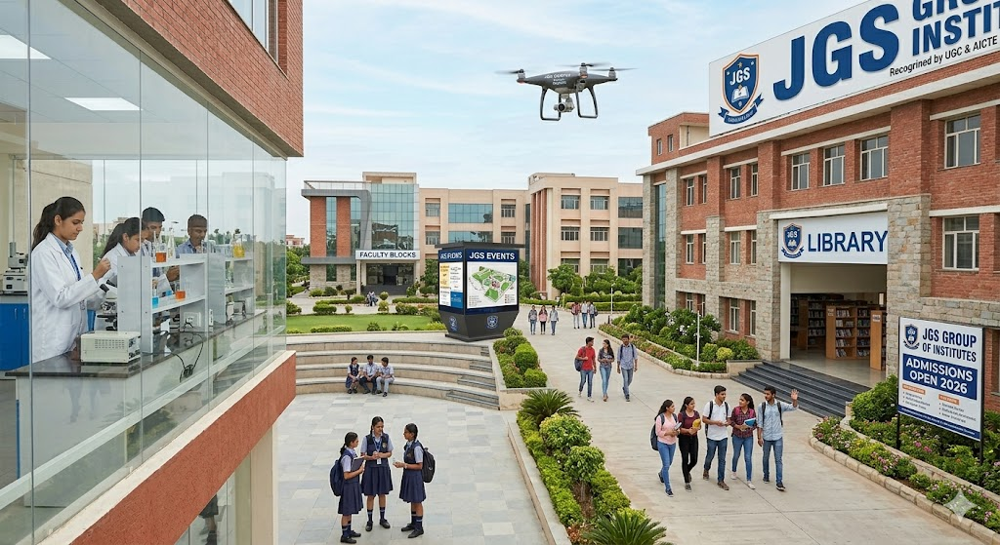

Modern Labs
Engineering, computing and project labs for hands-on learning.
See PhotosJGS includes academic blocks, laboratories, library, student zones, seminar spaces and event venues.
Engineering, computing and project labs for hands-on learning.
See PhotosAcademic resources, quiet study zones and extended exam hours.
See PhotosSeminars, clubs, hackathons, sports, cultural days and graduation.
See Photos
Events
Labs
CampusClassrooms, staff rooms, department offices and digital notice systems support daily academic operations.
Helpdesks support admissions, fees, certificates, ID cards, hall tickets, grievance tickets and lost-and-found requests.
Students can join technical clubs, cultural committees, sports teams, innovation cells, social initiatives and leadership groups.
Digital ID cards with QR verification, parent alerts, faculty contact workflows and emergency contact records improve campus safety.